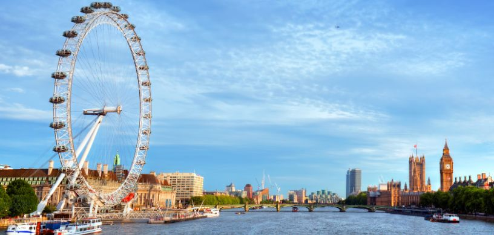

Education in UK is known globally as one of the best in the world. UK degrees and qualifications are recognised and are respected all over the world. The education system in the UK is the oldest established educational system in the world and it aims to provide a solid foundation for all the skills required to do well and succeed. Universities in UK use a variety of teaching and assessment methods to that focus on helping the students be indepent as well as have a strong mastery of the subject. The UK is considerably affordable as compared to other countries. There are a wide variety of scholarships and financial aid available to help students. The programs in the UK for graduate education have a shorter time span and offer the same qualifications, making UK a favourable place for students to study and live. The UK houses a multi cultural environment and community that exposes students to different culturtes of the world, thus promoting holistic growth. The UK also provides travel and work opportunities to its students in Europe and its major cities and countries as they are within a short distance and affordable.
UK is amongst the most favored destinations to study hospitality management and related courses of the tourism industry. UK has some of the best culinary training institutions in the world. Here are the best colleges offering courses in hospitality management:
University of Lincoln
The University of Lincoln is based in one of the world’s great historic cities, and is home to more than 14,000 students representing more than 100 nationalities. Lincoln has been awarded Gold, the highest standard possible, in the national Teaching Excellence Framework (TEF) 2017, an independent assessment of teaching quality in UK higher education. Hospitality, Event Management, and Tourism at Lincoln was ranked 1st overall in the UK in the Guardian University Guide 2020. Lincoln is ranked 17th overall in the UK in The Guardian University Guide 2020, and is a top 50 UK university.
Ulster University
Ulster University has a national and international reputation for excellence, innovation and regional engagement, making a major contribution to the economic, social and cultural development of Northern Ireland. The research at Ulster is world-leading and globally relevant, they work with other universities around the world to deliver ground-breaking research that can help future generations. Ulster University is ranked in the top 5 UK universities for hospitality, leisure, recreation and tourism in The Times/Sunday Times Good University Guide 2019. Ulster is also ranked in the top 2 UK Universities for Hospitality, Events and Tourism.
Coventry University
Coventry University is the 15th best university in the United Kingdom - The Guardian University Guide 2020. The Guardian University Guide 2019 ranked Coventry University number 4 in the UK for tourism and hospitality studies. Coventry University was rated 5 QS Stars for Employability in the QS Stars rating 2019. Coventery was voted the University of the Year for Student Experience in 2019 and ranked in the top 10 across 9 subject areas (Guardian University Guide 2020)
Oxford Brookes University
The 2019 rankings found that Oxford Brookes University is ranked amongst the "world's top universities" in 12 subjects. Oxford Brookes has been hailed as the UK's top university in the QS Top 50 Under 50 World University Rankings. Oxford Brookes has improved in the rankings and sees the University now ranked 33rd out of 121 UK institutions. Hospitality courses at Oxford Brookes University have been ranked 18th in the world in the latest QS World University Rankings by Subject. The 2018 QS rankings saw Hospitality and Leisure Management climb 16 places, improving on last year's score of 34th in the world.
University of Derby
Rated Gold in the Teaching Excellence and Student Outcomes Framework (TEF) and a Top 30 UK University in the Guardian University Guide 2020. Derby is now ranked 29th after jumping from 54th place out of 121 institutions. University of Derby is ranked among the top 10 in the world for international student learning experience. The university aims to provide industry-relevant, expert teaching, from foundation and undergraduate degrees through to postgraduate study and research.
University of Birmingham
The University of Birmingham was ranked 14th in the UK and 79th in the world in the QS World University Rankings for 2019. The 2017 Global Employability University Ranking places Birmingham at 142nd worldwide and 10th in the UK. Birmingham is one of the UK's major participants in the Erasmus programme, which encourages student exchanges between leading European institutions. The University of Birmingham is a founding member of Universitas 21, a global network of 27 research-led universities across 17 countries.
University of Hertfordshire
The University is the UK's leading business-facing university and an exemplar in the sector. It is innovative and enterprising and challenges individuals and organisations to excel. University of Hertfordshire ranks 601–800 among world universities in Times Higher Education World University Rankings in 2019. It comes under the ranking of 101-150 under Young University Rankings 2018.
De Montfort University
De Montfort University is ranked Gold under the Teaching Excellence Framework (TEF). The university was ranked in the top 3% of world universities in the THE World University Rankings 2016-17 and named in the top 1.5% of global universities for international impact in the Times Higher Education World University Rankings. DMU provides 25% of all undergraduate and postgraduate students the opportunity of professional experiences with a distinct international element through #DMUworks.
University of Sunderland
The University has been awarded Silver in the Teaching Excellence Framework (TEF). The university has been recognised by The Guardian as England's best new university. He university has a European Teaching rank of 201+ in 2019 rankings by THE. University of Sunderland is ranked 16th (out of 131 universities) in the 'University of the Year' category of the Whatuni Student Choice Awards 2019, the only national awards voted for by students.
Manchester Metropolitan University
Manchester Metropolitan University delivers high-quality teaching, learning and outcomes for its students. It consistently exceeds rigorous national quality requirements for UK higher education. Manchester Metropolitan University has been recognised with a Teaching Excellence Framework Silver award. MMU is ranked 601-800 th by World University Rankings 2020,151–200 th Young University Rankings 2019 and 126-150 th European Teaching Rankings 2019.
FAQs
What are the top five hospitality universities in the UK?
The five best universities for hospitality management in UK are mentioned below:
- University of Surrey
- Oxford Brookes University
- University of Strathclyde
- Bournemouth University
- Queen Margaret University
To pick the best hospitality university in UK that suits your interests and ambitions, undertake in-depth research, evaluate each institution's individual programs, admission requirements, and curriculum.
What prerequisites must one meet to enrol in a hospitality course at a UK university?
- Educational Requirements: Students must possess a high school diploma or a comparable credential, like the General Certificate of Secondary Education (GCSE) or A-levels. Other qualifications, such as BTEC or Access courses, may also be considered.
- English Language Competency: Typically accomplished through assessments viz., the International English Language Testing System (IELTS) or the Test of English as a Foreign Language (TOEFL).
- Particular Topics: Specific high school-level or similar courses in disciplines like maths, business studies, or a foreign language could be needed for some hospitality programs.
- Work History: While not necessarily required, some colleges may value or need employment experience in the hospitality sector.
- Statement of Purpose: A personal statement may be needed as part of the application process.
- Interviews or Entrance Tests: As part of the selection process, certain colleges or programs may interview candidates or demand that they take entrance examinations.
These are only general criteria; individual requirements may differ. Investigate and review the entry requirements of the colleges and programs you're interested in, as they can have different standards or additional needs.
What are the employment prospects for graduates of hospitality programs from UK universities?
In general, graduates of hospitality management courses in UK have had favourable employment prospects. The UK economy greatly benefits from the hospitality sector, providing graduates with numerous careers in hospitality.
Graduates can work in various hospitality-related fields viz., event planning, management, operations, marketing, and customer service.
The UK's robust hospitality industry comprising five-star hotels, Michelin-starred restaurants, and well-known tourist attractions, offers graduates several employment options.
How much does it cost to attend a UK university to study hospitality?
Tuition costs of studying hospitality in UK are often higher for overseas students with undergraduate degrees ranging from £12,000 and £25,000 annually and postgraduate degrees ranging between £12,000 and £30,000 annually.
These are only preliminary estimates. The entire cost of attending UK universities should include living expenditures, housing prices, and other personal expenses.
What are the UK's most sought-after hospitality courses?
There are numerous best universities for hospitality management in UK. The prominent and reputable hospitality programs in the UK are listed below.
- Hospitality Management
- Tourism and Hospitality Management
- Culinary Arts
- Event Management
- Restaurant Management
- Tourism and Hospitality Marketing
- International Hospitality Management
- Resort and Spa Management
Conduct thorough research on the top universities in UK for hospitality and tourism management for the most recent information on their course offerings, admission requirements, and reputations.
What scholarships and financial help are available to students studying hospitality at UK universities?
Various financial aid possibilities and scholarships for hospitality students in UK are available. Consider the following:
- University-specific scholarships
- Government-funded scholarships
- Hospitality industry scholarships
- Professional groups and organisations
- External financing sources
Thoroughly research scholarships or financial assistance options to understand the qualifying requirements, application procedure, and deadlines. Inquire with your preferred colleges about scholarships and financial aid for hospitality students.
Which are the finest universities in UK for tourism management?
Renowned for it's top-notch higher education system, the UK is home to several universities for tourism management. The best universities for tourism management in UK are:
- University of Surrey
- Bournemouth University
- University of Strathclyde
- University of Westminster
- Leeds Beckett University
- Oxford Brookes University
To identify the ideal fit for your academic and career goals, examine the program offerings, faculty expertise, and industry contacts of these prestigious colleges renowned for their outstanding tourism management programs.
Which are the best universities in the UK offering master's degrees in tourism management?
The top universities for Masters in tourism management in UK are:
- University of Surrey
- University of Strathclyde
- Bournemouth University
- University of Westminster
- University of Glasgow
- Cardiff Metropolitan University
- University of Brighton
- Oxford Brookes University
- University of Lincoln
- University of Exeter
Check the official websites of these universities and thoroughly examine their programs to ensure they match your personal needs and interests.
Student Testimonials:
The Edwise team is really helpful, got a really good response and high encouragement boost, sequential and organised.
- Name - Imran Ahmed Saleem
- Country - UK
- University - Oxford Brookes University
It was a really great experience for me. I am extremely thankful to Edwise for the constant guidance through this entire process.
- Name - Patel Neel Deepak
- Country - UK
- University - University of Derby
Excellent Service, good support and follow up. The Edwise team always motivates its students to do the best to succeed.
- Name - Akshay Kankaria
- Country - UK
- University - Manchester Metropolitan University
Edwise Overseas Education Consultant
We at Edwise streamline and personalize the process for each student irrespective of the destination, institution, course or any level of study. Our team of experienced professionals will provide you individual attention and exceptional guidance throughout your process of application. We provide assistance related to course selections, admission, visa, bank-loan and scholarships. We also host University delegates for direct student interaction and all these services are provided free of cost. We have established since 1991 and have been maintaining strong networks with over 725 universities in 16 countries, hence giving us a unique insight into the finest educational establishments worldwide.